Course Notes — CIS 501: Software Architecture and Design, Fall 2014
A method that returns as its answer the handle to a newly constructed object is called a factory method — the method “manufactures” an object each time it is called. We saw an example in the previous lecture in the Manager/Helper example.
Here is an example that we will develop in detail. We did a VS exercise where two threads of execution shared a “file” for reading and writing. The controller was supposed to ensure that the file was never simultaneously used for both reading and writing. The example was structured like this:
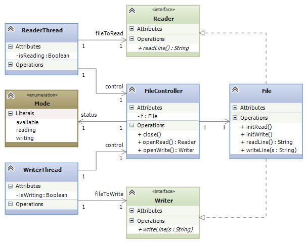The code in FileController remembered whether the File was being used for reading or writing.
The above architecture is limited to at most one ReaderThread doing reading at a time. But it is safe for multiple threads to read the same file simultaneously, and the threads can even read at different rates of speed, since no thread changes the file. We should modify the above design so that it allows multiple reader threads.
The solution is for the controller to manufacture, for each reader thread, an object that remembers the handle to the file object and the progress of reading. We use a factory method, makeReader, to manufacture FileReader objects:
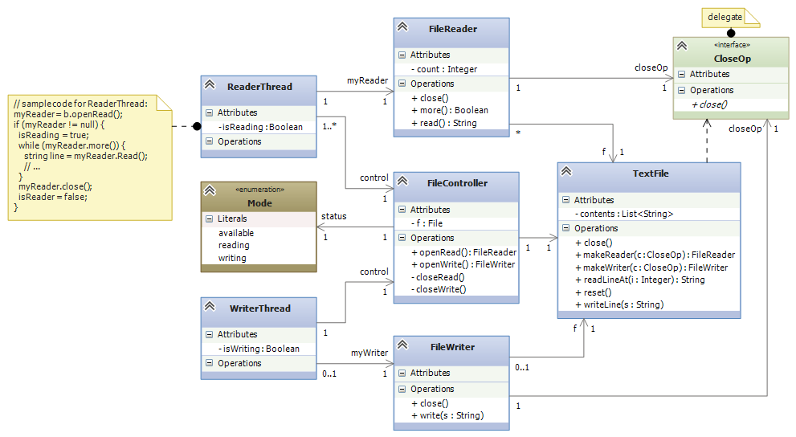When a ReaderThread wants to read the file, it calls the FileController‘s openRead() method, which checks if the file’s status is available or reading. In these cases, the status is set to reading and f.makeReader() manufactures a FileReader object. The FileReader object’s handle is returned to the ReaderThread, which calls the object’s read method to read the file’s lines. (The FileReader object holds a count of how far the file has been read.) We will study the close method in a bit.
makeReader is a factory method — it manufactures FileReader s.
When there are multiple ReaderThread s, each one calls openRead() and receives its own FileReader for reading the shared file.
The FileController is programmed to allow a WriterThread to write to the file only when the file’s status is available. (Then, the status is set to writing, and the file can be written.)
This state diagram defines the protocol enforced by the FileController:
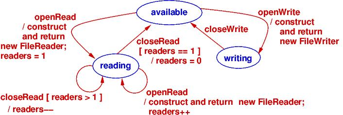In the previous class diagram, notice the delegate, CloseOp — it is used to solve a technical problem: the FileController must be told when a ReaderThread is finished reading from its FileReader object. So, when the FileReader object is constructed, a handle to FileController‘s private method, closeRead, is embedded within the FileReader. When the ReaderThread calls close() in the FileReader, this activates a call to closeRead(), too!
If you study the Design Patterns book, you will see a difference between a factory method (as illustrated above) and the design pattern that uses a factory method.
The factory method design pattern states that the connection between a Client (like the ReaderThread) and the factory method (like makeReader) that constructs Helper objects (like the FileReader objects) should be defined with interfaces and delegates, say like this:
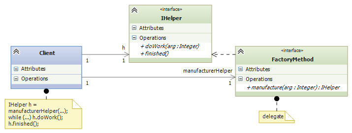The pattern shows that the Client does not need to know how the helper objects are constructed. The delegate and interface are implemented by the factory method (which is coded inside some class, Manufacturer) and the class of Helper:
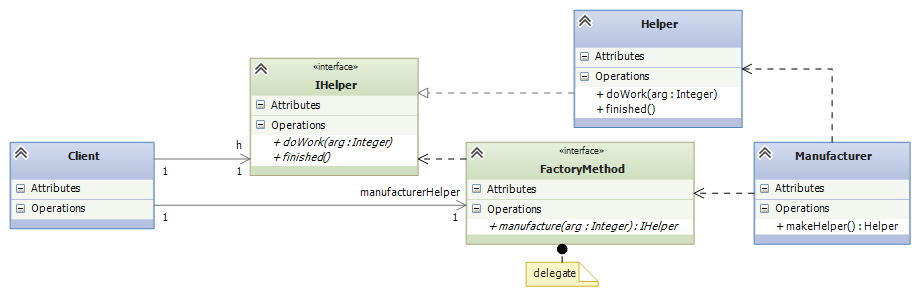Indeed, the two classes can be one and the same:
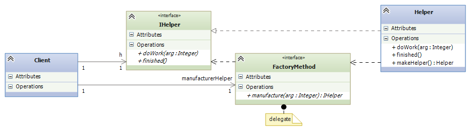The factory method design pattern states that the Client can be happily ignorant of the details of manufacuring helpers.
In the above example, the FileReader‘s read method counts the file’s lines, meaning that the ReaderThread and the FileController do not do the counting.
An object that “counts through” the elements of a collection is called an iterator object. In the above example, each FileReader object is an iterator for the TextFile object.
An iterator object has a method that returns the next item in a collection and a method that asks if there are any more items left to be returned. For TextFile, these are the read and more methods. Using an iterator object, we write a standard loop that reads all the file’s lines and uses them:
FileReader r = controller.openRead();
if (r != null) { // OK to read?
while (r.more()) { // reading lines from file, one at a time:
string s = r.read();
Console.WriteLine(s);
}
}
That’s it!
The previous example looks like the iterator objects used in Java, where we collect some Item objects in a collection, ItemAggregate:
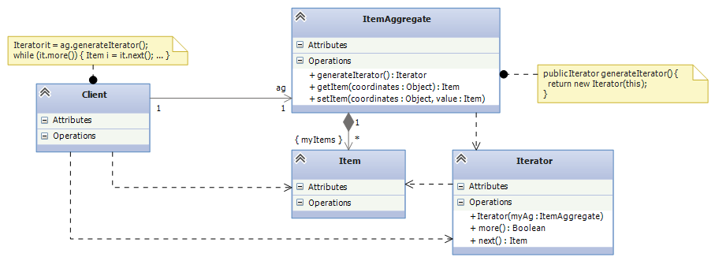(Note: interfaces are often inserted between the Client and the Iterator, like we saw at the end of the previous section. There is a good reason for this — see below.)
Look again at the FileReader example: the “ItemAggregate” is class TextFile, which holds string “Items”. Class FileReader is the “Iterator”, and readLine is the “next” method.
The Iterator Design Pattern is important because every system uses a data structure or database, and every system must read and process all the elements of the data structure. The data structure might be a list or a table or a tree or a graph, and each of these structures have distinct traversal algorithms. By using the iterator design pattern, we hide the traversal algorithm from the code that reads and processes all the elements in the data structure.
The previous example looks like the iterator objects used in Java. In the C# .NET library, there is an interface, IEnumerable, that defines how you are supposed to code an interator class in C#. The method names are a little different and work slightly differently:
public interface IEnumerable {
// moves to the next element in the collection and makes it Current;
// returns true if successful; returns false if there is no next element.
public bool MoveNext();
// resets the counting to the front of the collection:
public void Reset();
// returns the value of the current element in the collection:
object IEnumerator.Current;
}
You are also supposed to write a factory method, GetEnumerator(), which constructs the iterator object. The C# compiler lets you use objects that implement the IEnumerable interface with a foreach loop. Indeed, a foreach loop like this one:
MyCollection collection = ... ;
foreach (C c in collection) {
... c ...
}
is reformatted by the C# compiler into this while loop that uses the iterator object:
IEnumerable iterator = collection.GetEnumerator();
iterator.Reset();
while (iterator.MoveNext()) {
C c = (C)(iterator.Current);
... c ...
}
Whenever you define a data structure in C# that holds a collection of objects — a matrix, a tree, a linked list, etc. — you should define an iterator that can traverse the structure and enumerate the objects. Then you use the foreach loop to process the data structure.
Masaaki Mizuno’s CIS501 notes has this good example of the iterator pattern:
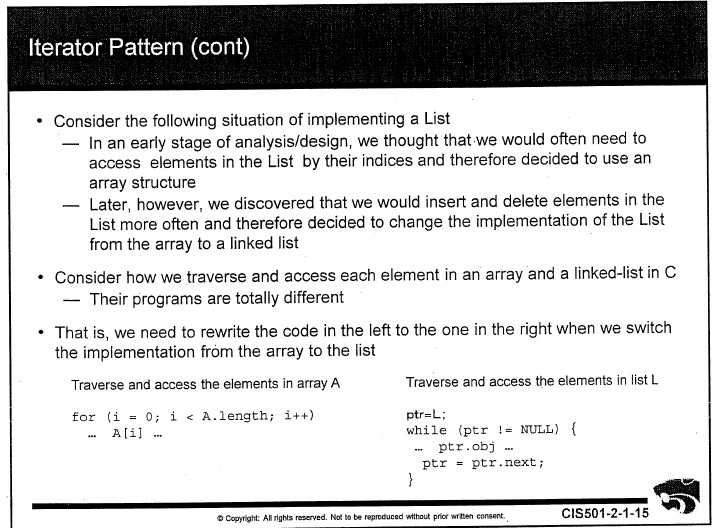 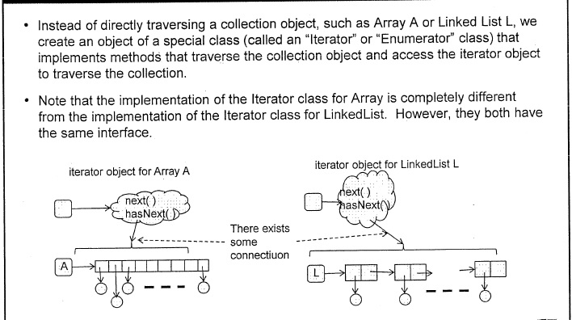 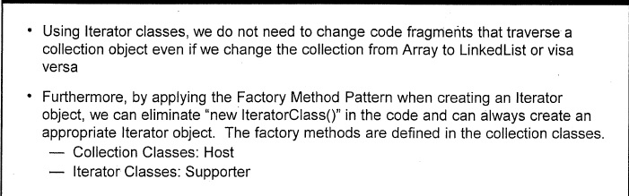 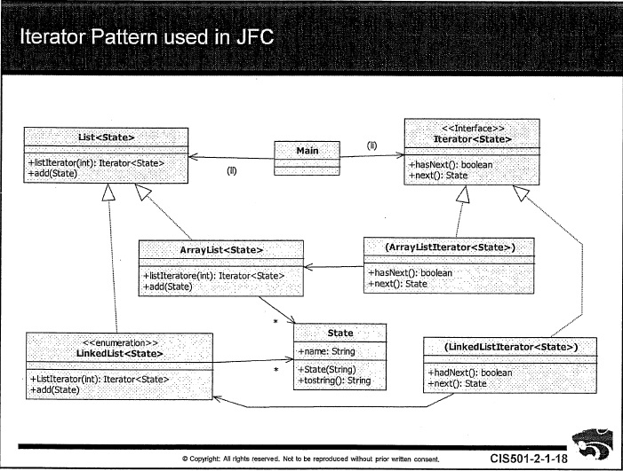In the previous example, class FileReader does the work of reading the file; this simplifies class FileController and makes possible multiple active FileReader s. class FileWriter works the same way, but there should be at most one object constructed from class FileWriter at any one time. A class from which we build exactly one object is a singleton class.
Here is class FileWriter, rewritten so that only one object is ever constructed from it. (The key is the private constructor method!)
// constructs a single object for writing to a text file (list of strings)
public class FileWriter {
// IMPORTANT: holds the handle to the "singleton" FileWriter object:
private static FileWriter writerOb = new FileWriter();
private static bool inUse; // remembers if writerOb is being used
private static File myfile; // the file to write to
// IMPORTANT: the constructor is private !
private FileWriter() { inUse = false; }
public void write(string s) { myfile.writeLine(s); }
public void close() { inUse = false; }
// returns the handle to the FileWriter object, if it isn't inUse
public static FileWriter newWriter(File f) {
FileWriter w = null;
if (!inUse) {
inUse = true; w = writerOb;
myfile = f; myfile.reset();
}
return w;
}
}
The class File “manufactures” the singleton object like this:
public FileWriter makeWriter() {
reset();
return FileWriter.newWriter(this);
}
It is invalid to say:
FileWriter mywriter = new FileWriter();
because the constructor is private. Now, it is impossible to have two writers to the same file at the same time, no matter how the FileController is programmed.
Thanks to the factory methods, the FileController has one job only — to enforce the protocol of file usage. This is the true job of the controller.
We see that the FileController can be used to control other kinds of resources besides textfiles. Maybe we use it with binary files or with a shared data buffer or with a hardware device with readable/writable data.
We can “cut” the above design into two, to expose how the FileController might connect to other resources. Here is the controller part, where we inserted interfaces on the outgoing arcs:
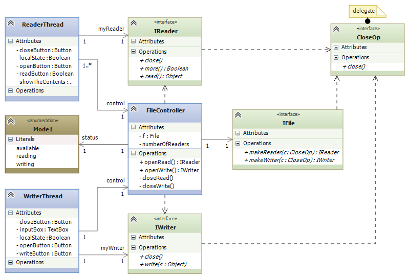The interfaces are “plug-in” points for the form of file and the forms of reader/writer. When we replug-in the classes we coded so far, we have the system we started with:
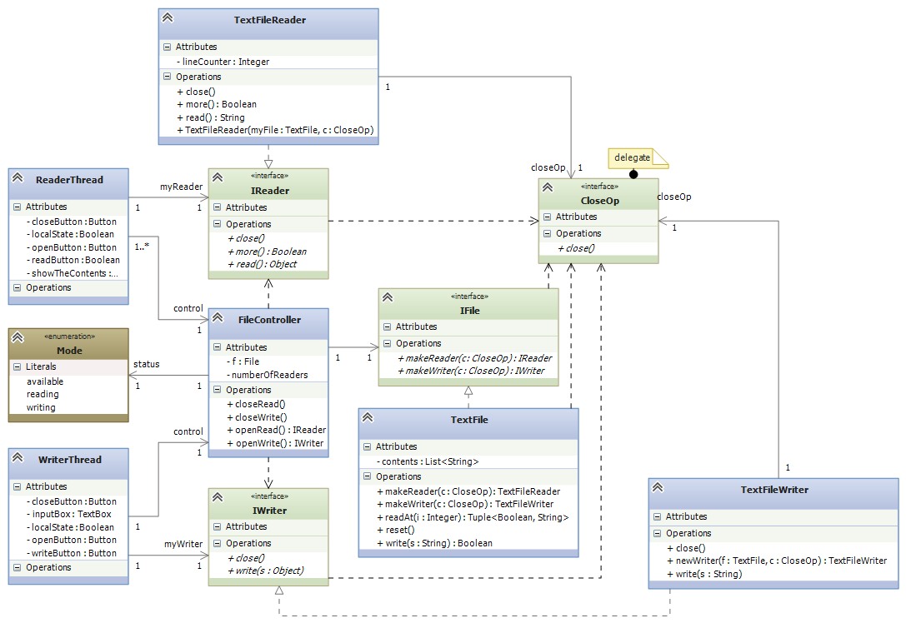But we can reuse the controller with other forms of file:
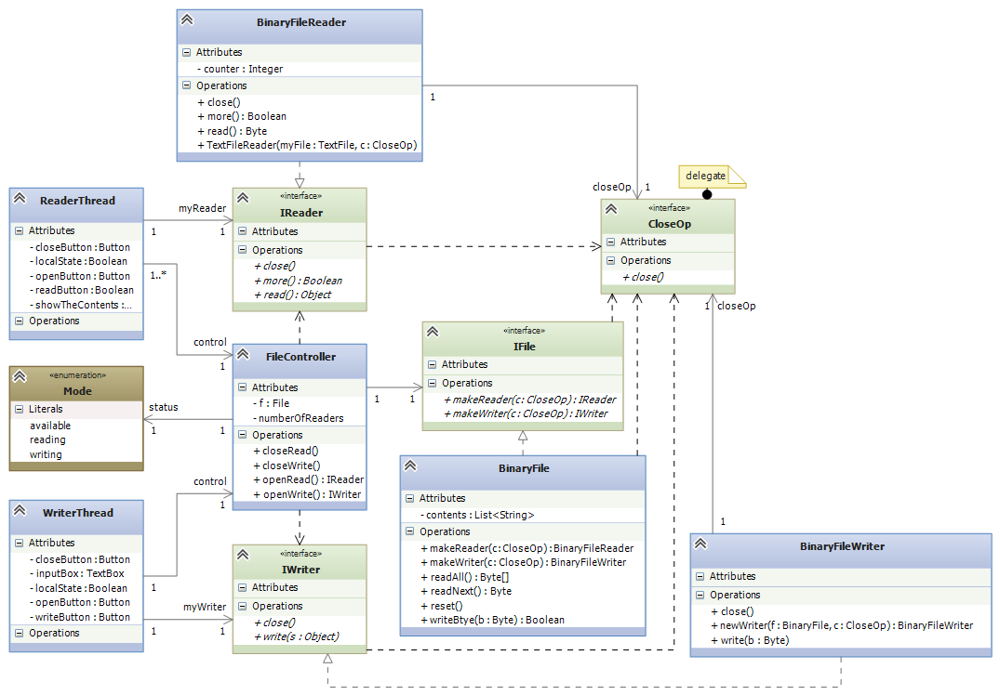When there are a set of interfaces that include factory methods, this is called an abstract factory. We plug into the interfaces a “concrete factory” of classes that “manufacture” a family of objects. In the above example, we have a simple abstract factory for manufacturing readers and writers. There are two concrete factories — one for text files and one for binary files.
The best-known example of an abstract factory is a collection of factory methods and interfaces for manufacturing graphics. We might have a set of Windows XP widget classes, a set of Windows 7 widget classes, and a set of Mac widget classes, all implementing an abstract factory of widget interfaces.
Here is a page from Design Patterns, by E. Gamma, et al. (Addison Wesley, 1995, copied under “fair use” laws), that explains the example well:
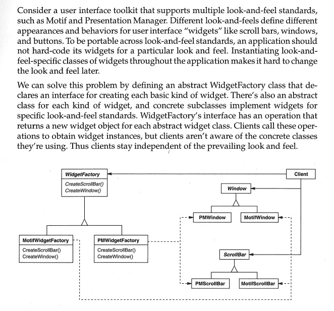This note was adapted from David Schmidt's CIS 501, Spring 2014, Lecture 11 course note. © Copyright 2014, David Schmidt.